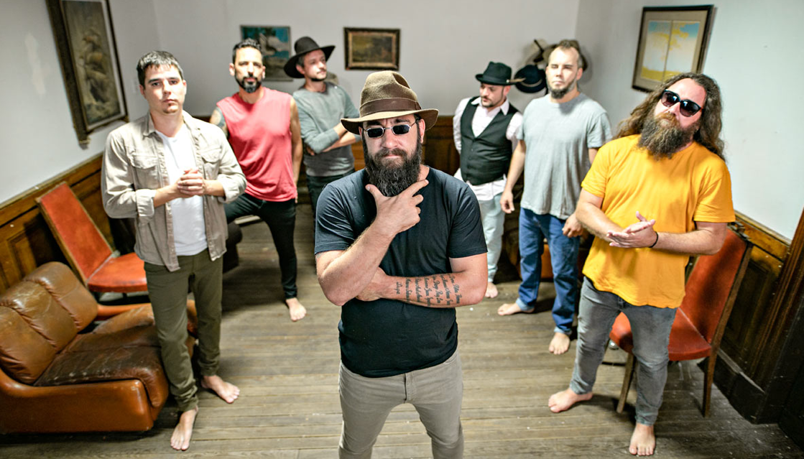
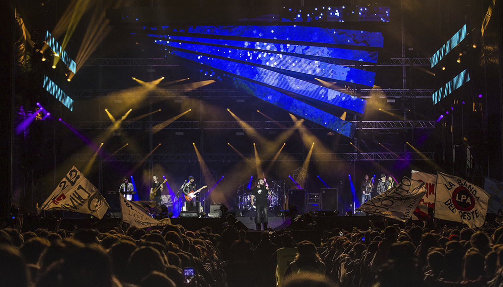
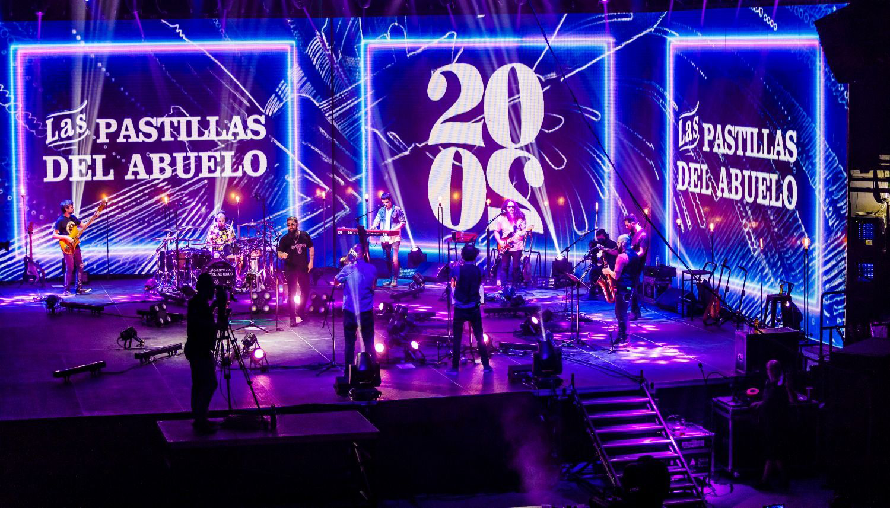

El origen de la banda tiene lugar con el cambio de milenio en el colegio Mariano Acosta en el barrio de Balvanera de la Ciudad de Buenos Aires.
En el año 2002 adoptan el nombre Las Pastillas del Abuelo y realizan unos conciertos en un local llamado La Colorada. Durante el período 2002-2003 se registran los 2 primeros demos y comienzan a tocar de forma mas continuada en diversas salas y centros culturales.
A principios de 2004 queda conformada la formación actual con los integrantes de la banda: Juan Piti Fernandez en voz y armónicas, Alejandro Mondelo en teclados y coros, Juan Comas en batería, Fernando Vecchio en guitarras, Santiago Bogisich en bajo, Joel Barbeito en saxofón y coros, Diego Bochi Bozzalla en guitarra y coros. Durante ese año continúan presentándose en vivo regularmente.
Durante el verano de 2005 realizan una fructífera primera gira en la ciudad balnearia de Villa Gessell. A los pocos meses entran a estudio para grabar su primer trabajo discográfico titulado Por Colectora.
También participan y ganan el concurso El Bombardeo del Demo del programa Day Tripper emitido por fm Rock & Pop cuyo premio es tocar en el festival Pepsi Music en el mítico estadio de Obras.
El verano de 2006 los lleva a girar por la costa atlántica y participar del festival Gessell rock. En marzo de ese año y consecuente con el crecimiento en convocatoria realizan dos conciertos agotados en El Teatro de colegiales.En el invierno repitieron doble fecha pero en El Teatro de Flores. Durante este año la banda comienza a girar por distintos localidades del gran Buenos Aires y el interior del país. Entran a estudio y graban su segundo trabajo discográfico y cierran el año con tres funciones agotadas nuevamente en El Teatro de Colegiales.
Durante el 2007 continuan presentándose en vivo regularmente recorriendo el interior del país y durante el mes de julio realizan siete conciertos en El Teatro de Flores con localidades agotadas.
El 11 de abril de 2008 llegan y agotan anticipadamente su primer concierto en el Estadio Luna Park.
De ahí en adelante Las Pastillas del Abuelo continuaron presentándose en vivo por todas las provincias de Argentina aumentando su capacidad de convocatoria. El 16 de abril de 2016 realizan un concierto en el Estadio del Club Ferrocarril Oeste donde agotaron las 25000 localidades disponibles.
Han girado por diversos países como Uruguay, Chile, Paraguay, Peru, Mexico, Cuba, Brasil,han grabado 6 discos de Estudio: Por Colectora (2005), Las Pastillas del Abuelo (2006), Crisis (2008), Desafíos (2011), Paradojas (2015) y 2020 (2020); 4 discos en vivo: Versiones (2010) grabado en vivo durante el programa Cual Es emitido por fm Rock & Pop, La Kermesse (2012) grabado en vivo durante el concierto en el Club Hípico de Buenos Aires, 10 Años (2013) grabado en vivo durante un concierto en el Luna Park y Vivo de Pastillas Locura y Realidad (2017) primer cd-dvd de la banda grabado en vivo durante los conciertos en el Estadio de Ferrocarril Oeste, Luna Park y Direct tv Arena. El disco El Barrio en sus Puños (2014) es una opera rock inspirada en la vida del mítico boxeador Oscar Ringo Bonavena y fue llevada a los escenarios en la modalidad Teatro Ciego.
- 
- 
- 